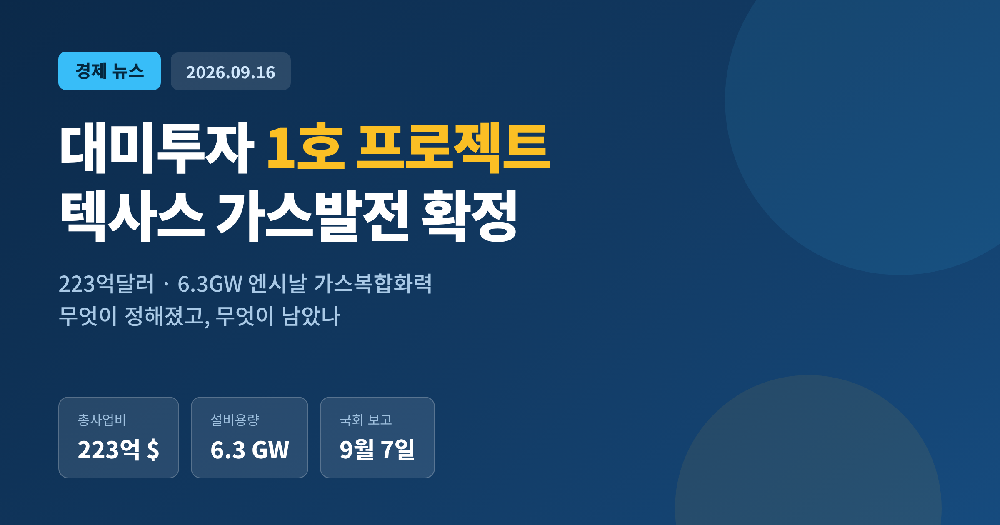
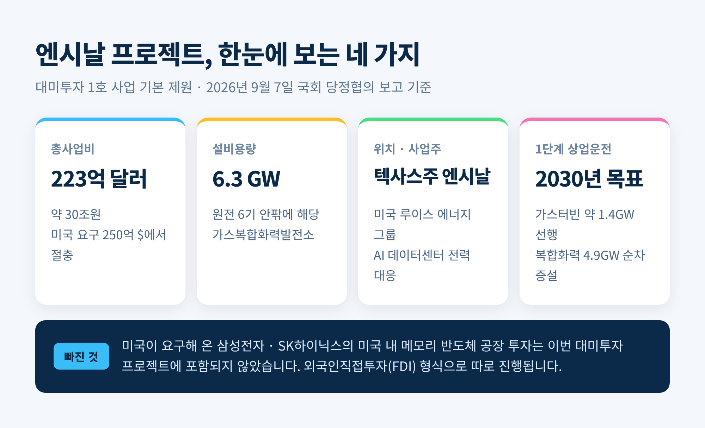
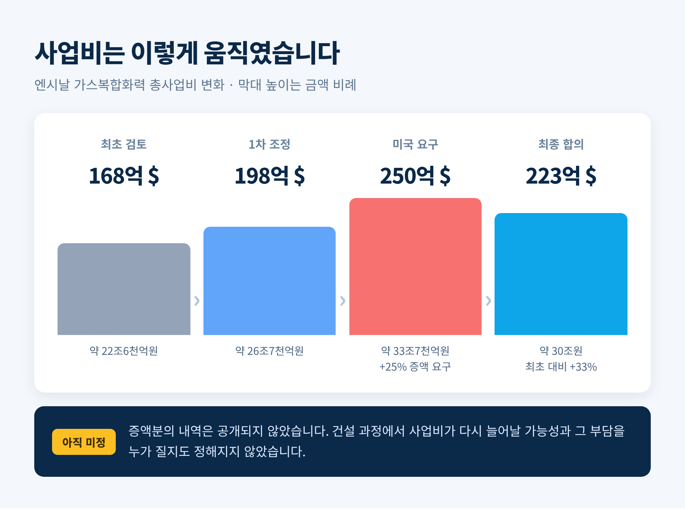
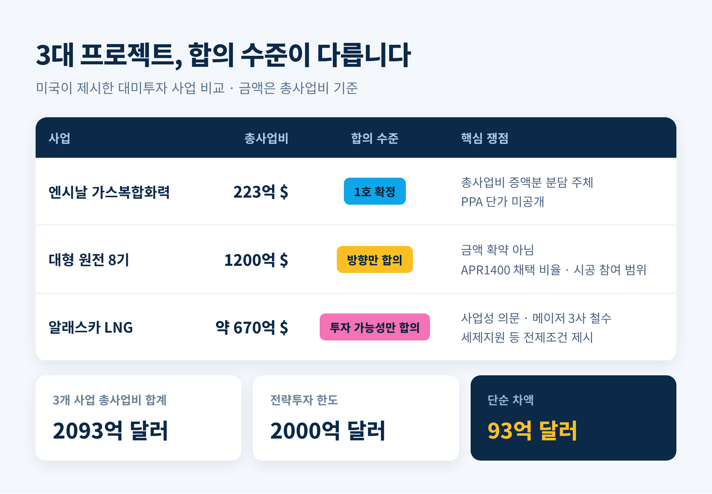
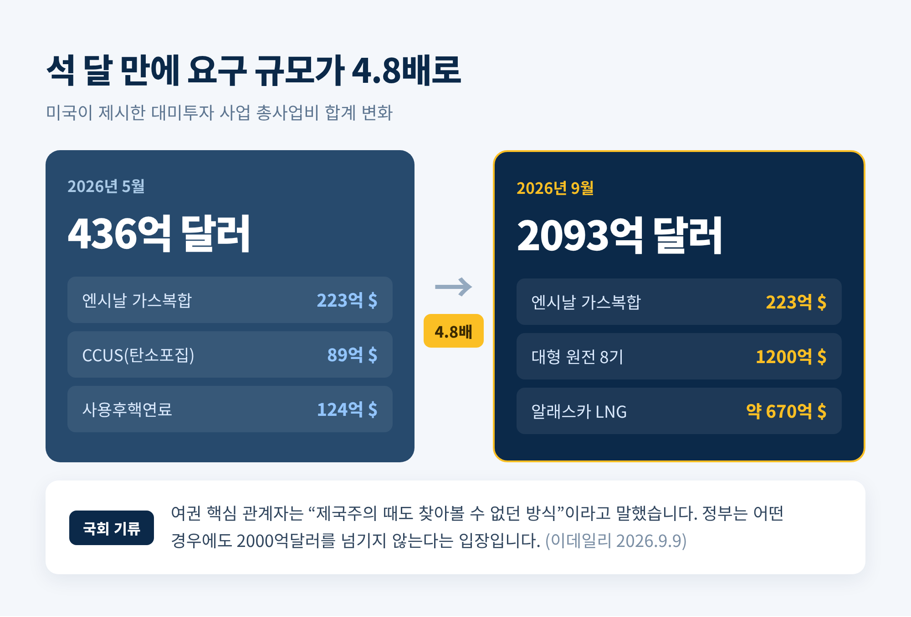
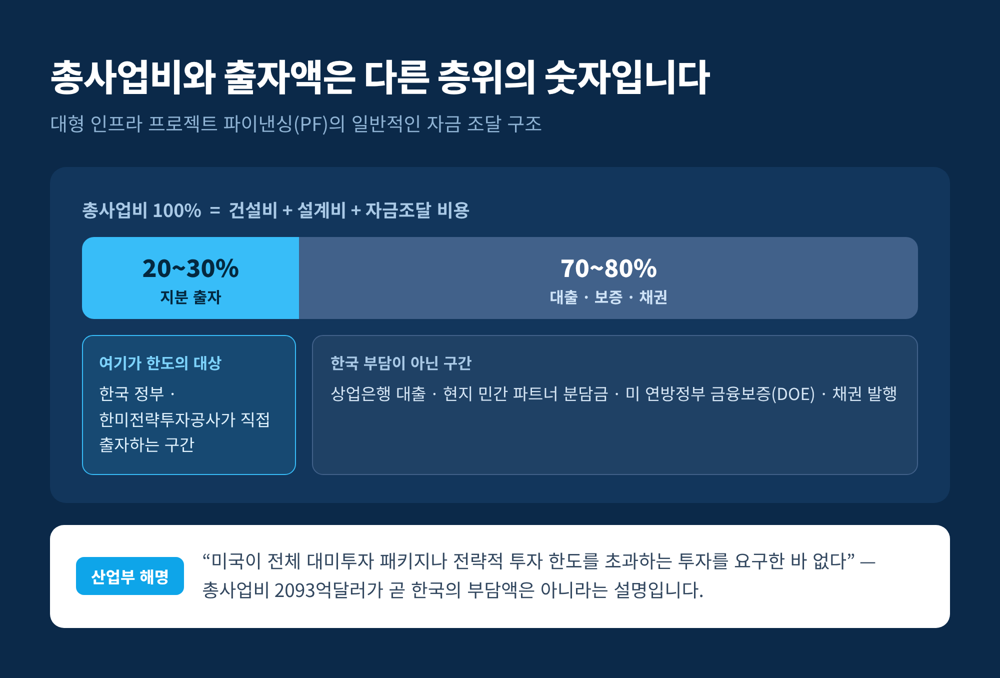
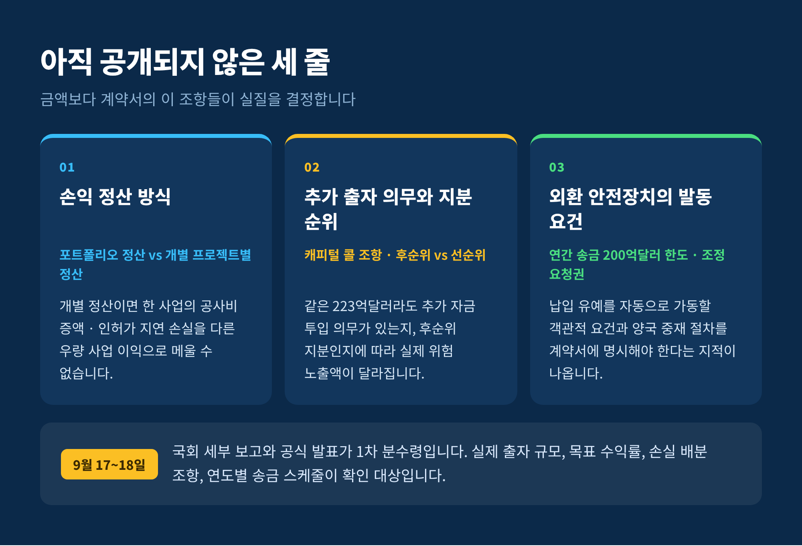

이번 글에서는 한미 3500억달러 대미투자 패키지의 첫 사업으로 확정된 텍사스 엔시날 가스복합화력발전 건을 정리해 보겠습니다. 숫자가 크고 용어가 낯설어 흐름을 놓치기 쉬운 사안입니다. 무슨 일이 있었고, 무엇이 아직 정해지지 않았는지를 순서대로 짚겠습니다.
산업통상부는 2026년 9월 7일 여의도 국회에서 열린 당정협의에서 대미투자 1호 프로젝트를 보고했습니다.
같은 자리에서 프로젝트별 특수목적법인, 이른바 I-SPV의 운영계약안도 함께 올라갔습니다.
회의에는 더불어민주당 재정경제기획위원회와 산업통상자원중소벤처기업위원회 소속 의원들이 참석했습니다. 정부에서는 박정성 산업통상부 통상교섭본부장과 대미 협상 실무자들이 나왔습니다. 김정관 산업통상부 장관은 이재명 대통령의 프랑스 순방에 동행하느라 이날 보고에서 빠졌습니다.
이 절차는 관행이 아니라 의무입니다. 대미투자특별법은 정부가 협상을 체결하기 전에 국회 소관 상임위원회에 내용을 보고하도록 정하고 있습니다.
정부는 9월 17일 세부 내용을 국회에 보고한 뒤, 이르면 18일 대미투자 추진계획을 공식 발표할 예정입니다.

미국 텍사스주 엔시날에 가스복합화력발전소를 짓는 사업입니다. 목적이 분명하게 적혀 있습니다. 인공지능 데이터센터의 전력 수요에 대응하기 위한 발전소입니다.
전체 설비용량은 6.3기가와트입니다. 원전 여섯 기 안팎에 해당하는 규모입니다.
한 번에 다 짓지는 않습니다. 1단계로 가스터빈 발전 약 1.4GW를 먼저 개발하고, 이후 효율이 높은 복합화력 4.9GW를 순차적으로 늘립니다. 초기 발전소를 먼저 돌려 전력 수요와 사업성을 확인한 뒤 설비를 더하는 구조입니다. 대규모 선투자에 따르는 위험을 낮추자는 취지입니다.
사업주로는 미국 에너지기업 루이스 에너지 그룹이 참여합니다. 1단계 상업운전 목표 시점은 2030년으로 거론됩니다.
생산한 전기를 어디에 파는지도 관건입니다. 텍사스 전력망인 ERCOT에 판매하는 방안과, 인근 AI 데이터센터에 직접 공급하는 방안이 함께 검토되고 있습니다. 데이터센터와 장기 전력판매계약을 맺거나 전력망을 거치지 않는 직결 방식이 확정되면, 전력가격이 오르내려도 현금흐름이 비교적 안정됩니다.
한편 하워드 러트닉 미국 상무장관이 요구해 온 삼성전자와 SK하이닉스의 미국 내 메모리 반도체 공장 투자는 이번 대미투자 프로젝트에 들어가지 않았습니다. 정부 관계자는 해당 투자가 외국인직접투자 형식으로 따로 이뤄진다고 설명했습니다.
협상 경과를 보면 금액이 계속 움직였습니다.
미국 측은 총사업비를 당초 198억달러, 우리 돈 약 26조7000억원에서 250억달러, 약 33조7000억원으로 올려달라고 요구했습니다. 인상률로는 약 25%입니다. 양국은 최종적으로 223억달러에서 절충한 것으로 알려졌습니다.
시야를 더 넓히면 폭이 커집니다. 엔시날 사업비는 처음 검토될 때 168억달러였습니다. 이후 200억달러로 늘었고, 최종 223억달러가 됐습니다. 최초 검토액보다 55억달러, 약 33% 불어난 셈입니다.
문제는 이 증액분의 내역이 공개되지 않았다는 점입니다. 발전설비 외에 송전선과 가스 공급망 같은 부대 인프라가 추가된 것인지, 원자재값과 인건비 상승분이 얼마나 반영됐는지, 예비비는 어느 정도인지에 따라 예상 수익률이 달라집니다.
더 중요한 대목은 따로 있습니다. 건설 과정에서 사업비가 또 늘어날 가능성과, 그 부담을 누가 질지가 아직 정해지지 않았습니다.

배경에는 미국의 전력 사정이 있습니다.
텍사스 전력망 운영기관 ERCOT는 계통 총수요가 2029년까지 27만8003메가와트에 이를 것으로 내다봤습니다. 2023년 8월 10일 기록한 역대 최고 피크 수요 8만5508메가와트의 세 배가 넘는 수치입니다. 2032년까지 암호화폐를 제외한 데이터센터 수요만 228기가와트에 이를 것이라는 추산도 있습니다.
미국 에너지정보청은 ERCOT 지역의 가스화력 발전량이 2026년에 전년 대비 7.1%, 2027년에 다시 18% 늘어날 것으로 전망했습니다. 태양광이 멈추는 밤 시간을 메울 수단으로 가스발전이 지목되고 있습니다.
다만 이 그림에는 그림자도 있습니다. ERCOT 자신이 2026년 여름 피크 수요를 9만500에서 9만8000메가와트 사이로 보고 있습니다. 장기 전망에 반영된 11만2000메가와트보다 한참 낮습니다. "텍사스 AI 전력 붐이 실현되지 않을 수 있다"는 경고도 같은 기관에서 나왔습니다. 계통연계 신청이 474기가와트까지 몰리자 텍사스가 데이터센터 연계를 일시 중단한 일도 있었습니다.
예전엔 전력 수요 전망이 완만한 곡선이었습니다. 지금은 위로도 아래로도 크게 흔들립니다. 6.3GW짜리 발전소의 사업성이 바로 이 흔들림 위에 놓여 있습니다.
1호가 끝이 아닙니다.
미국은 대형 원전 8기 건설에 대미투자기금 1200억달러를 넣자고 제안했습니다. 원전 한 기당 건설비를 약 150억달러로 잡은 계산입니다. 한미는 8기 건설이라는 큰 방향에는 뜻을 모았지만, 한국은 1200억달러를 확약하기보다 포괄적인 협력 방안을 합의문에 담는 쪽으로 조율하고 있습니다.
원전에서 우리가 챙겨야 할 것은 금액이 아니라 조건입니다. 한국형 원전 APR1400 노형이 얼마나 채택되는지, 국내 기업의 기자재 납품과 시공 참여가 어디까지 보장되는지, 건설이 지연될 때 위험을 누가 지는지가 공개돼야 합니다.
세 번째로 거론되는 알래스카 LNG는 결이 다릅니다. 알래스카 북부 노스슬로프 가스전에서 캔 천연가스를 약 1300킬로미터 가스관으로 남부 케나이반도 니키스키까지 보내 액화해 수출하는 사업입니다. 총사업비만 약 670억달러, 우리 돈 91조원 규모입니다.
사업성에는 물음표가 붙어 있습니다. 애초 참여했던 엑손모빌과 BP, 코노코필립스는 모두 손을 뗐습니다. 지금은 개발사 글렌파른이 넘겨받아 다시 추진하는 중입니다. 환경 반대, 높은 건설비, 혹한, 러시아 제재, 미국 정치 변화가 모두 변수로 꼽힙니다.
그래서 한미는 알래스카 LNG를 협력 대상에서 빼지는 않되, 당장 투자하지는 않기로 가닥을 잡았습니다. 한국은 알래스카주 세제지원과 미 연방정부 지원, 건설비 절감, 경쟁력 있는 LNG 도입가격을 참여 전제조건으로 제시할 것으로 보입니다. 확정이 아니라 "투자 가능성만 합의"된 단계입니다.

미국이 우리 정부에 요구한 대미투자 사업의 총 규모는 2093억달러로 집계됩니다. 엔시날 223억달러, 원전 8기 프레임워크 1200억달러, 알래스카 LNG 약 670억달러를 더한 값입니다.
불과 세 달 전인 2026년 5월만 해도 후보군의 무게는 달랐습니다. 엔시날에 탄소포집·활용·저장 사업 89억달러, 사용후핵연료 사업 124억달러를 더해 436억달러였습니다. 석 달 사이 요구 규모가 약 4.8배로 불어났습니다.
여기에 한도 문제가 걸립니다. 3500억달러 패키지에서 조선 협력 1500억달러를 빼면 전략투자 한도는 2000억달러입니다. 알래스카 LNG까지 포함되면 93억달러, 약 12조원을 넘기게 됩니다.
정부는 어떤 경우에도 2000억달러를 넘기지 않는다는 입장입니다. 그러나 국회 안의 기류는 편치 않습니다. 여권 핵심 관계자는 미국이 언제 어떤 방식으로 세부 내용을 바꿀지 모른다며 "제국주의 때도 찾아볼 수 없던 방식"이라고 말했습니다. 다른 의원은 "이왕 투자할 것이라면 원금을 제대로 회수해서 국익을 챙기는 것이 최우선"이라고 했습니다.

다만 이 숫자를 그대로 읽으면 오해가 생깁니다. 반대 해석도 함께 봐야 합니다.
에너지 인프라의 총사업비는 건설비와 설계비, 자금조달 비용까지 포함한 전체 규모입니다. 반면 한미가 합의한 전략투자 한도는 한국 정부와 한미전략투자공사가 직접 출자하는 지분과 자금 제공의 한도를 뜻합니다. 둘은 같은 층위의 숫자가 아닙니다.
통상 대형 인프라 사업은 총사업비의 20~30%만 지분 출자로 조달합니다. 나머지 70~80%는 상업은행 대출, 현지 민간 파트너의 분담금, 미 연방정부의 금융보증, 채권 발행으로 채웁니다. 이 구조를 적용하면 세 사업의 총사업비 합계가 2100억달러를 넘더라도 한국이 실제로 출자하거나 부담하는 금액은 그보다 훨씬 작게 분산됩니다.
산업통상자원부가 "미국이 전체 대미투자 패키지나 전략적 투자 한도를 초과하는 투자를 요구한 바 없다"고 곧바로 해명한 근거가 여기에 있습니다. 어느 쪽이 옳다고 단정하기보다, 총사업비와 출자액을 구분해 읽는 습관이 먼저 필요해 보입니다.

한미전략투자공사는 2026년 6월 18일 출범했습니다. 제도의 대원칙은 하나입니다. 투자 대상은 원리금 회수가 기대되는, 상업적으로 합리적인 사업이어야 합니다.
문제는 그 원칙을 계약서에 어떻게 새기느냐입니다.
가장 큰 난제는 손익 정산 방식입니다. 여러 사업의 손익을 하나로 묶어 상쇄하는 포트폴리오 정산이 있고, 사업마다 따로 계산하는 개별 프로젝트별 정산이 있습니다. 미국 요구대로 개별 정산이 채택되면, 한 사업에서 공사비가 크게 늘거나 인허가가 지연돼 손실이 나도 다른 우량 사업의 이익으로 메울 수 없습니다. 부실이 난 자리의 손실을 우리 출자 기관이 그대로 떠안게 됩니다.
실제 위험 노출액을 가르는 조항은 두 가지 더 있습니다. 사업비가 늘었을 때 추가 자금을 넣어야 하는 의무가 있는지, 그리고 한국이 후순위 지분으로 들어가는지 아니면 우선주나 선순위 대출 형태를 취하는지입니다. 같은 223억달러라도 이 두 줄에 따라 위험의 크기가 완전히 달라집니다.
I-SPV 운영계약안이 주목받는 이유도 같습니다. 1호 프로젝트 의결이 첫 투자 대상을 정하는 절차라면, 운영계약안 의결은 그 투자를 실행할 법적·운영상 틀을 짜는 단계입니다. 그런데 구체적 내용은 공개되지 않았습니다. 첫 계약이 후속 사업의 사실상 선례가 된다는 점에서, 지금 비용과 위험을 어떻게 나누느냐가 앞으로 수십 년을 좌우합니다.
돈이 나가는 속도도 변수입니다.
한미 전략투자 양해각서에는 연간 자금 송금 한도를 200억달러로 제한한다는 조항이 들어 있습니다. 국내 외환시장 변동성이 극심해지면 자금 납입 시기와 규모의 조정을 요청할 수 있는 권한도 명시돼 있습니다. 재원은 외환보유액 운용 수익과 외화채권 발행을 적극 활용한다는 방침입니다.
다만 전문가들은 '요청권' 수준으로는 부족하다고 봅니다. 외환시장이 흔들려 납입을 미뤘을 때, 미국이 이를 약정 위반으로 보고 관세 인상 같은 통상 보복에 나설 가능성을 막을 장치가 필요하다는 것입니다. 원달러 환율 상승폭이나 외화 유동성 지표처럼 객관적인 발동 요건을 두고, 양국 간 중재 절차까지 최종 계약서에 담아야 한다는 지적이 나옵니다.

파급은 여러 갈래로 갈립니다.
발전소의 설계·조달·시공은 국내 대형 건설사가 맡고, 가스터빈은 국내 발전기자재 업체가 공급하는 방안이 거론되고 있습니다. 1.4GW 가스터빈 설비를 먼저 짓고 4.9GW 복합화력을 순차 증설하는 구조라, 수주가 한 번에 몰리기보다 여러 해에 걸쳐 나뉠 가능성이 큽니다.
조선은 조금 다른 축입니다. 3500억달러 패키지 안에서 조선 협력 1500억달러는 전략투자 2000억달러와 구분되는 별도 몫으로 잡혀 있습니다.
다만 짚어둘 점이 있습니다. 위에 언급한 산업별 참여는 아직 "거론되고 있다" 수준의 보도이고, 확정된 계약 내용이 공개된 것은 아닙니다. 기대를 미리 당겨 쓰기에는 이른 단계입니다.
9월 17일 국회 보고와 18일로 예정된 공식 발표가 1차 분수령입니다.
그 자리에서 확인해야 할 항목은 이미 정해져 있다고 봅니다. 한국 측의 실제 출자 규모, 목표 수익률, 손실 배분 조항, 연도별 송금 스케줄입니다. 여기에 엔시날 장기 전력판매계약의 단가와 공사비 인상분을 누가 부담하는지가 더해져야 합니다.
원전 8기 합의문이 금액 확약으로 굳는지, 아니면 포괄 협력 수준에 머무는지도 보셔야 합니다. 알래스카 LNG는 한국이 내건 전제조건이 실제로 반영되는지가 관건입니다.
아직 완결된 그림은 아닙니다. 계약서의 문장 몇 줄이 남아 있고, 그 문장이 이 사안의 실질을 결정합니다.
끝으로 한 마디만 더 드리겠습니다.
이번 건의 무게는 223억달러라는 숫자에 있지 않습니다. "얼마를 내느냐보다 어떻게 돌려받느냐"에 있습니다.
첫 계약은 선례가 됩니다. 1호 사업의 문장이 단단하게 쓰인다면, 뒤따를 수십조 원의 길도 그만큼 안전해질 것입니다. 그 문장을 지금 확인할 수 있느냐고 물으신다면, 저는 국회 보고가 그 첫 기회라고 답하겠습니다.